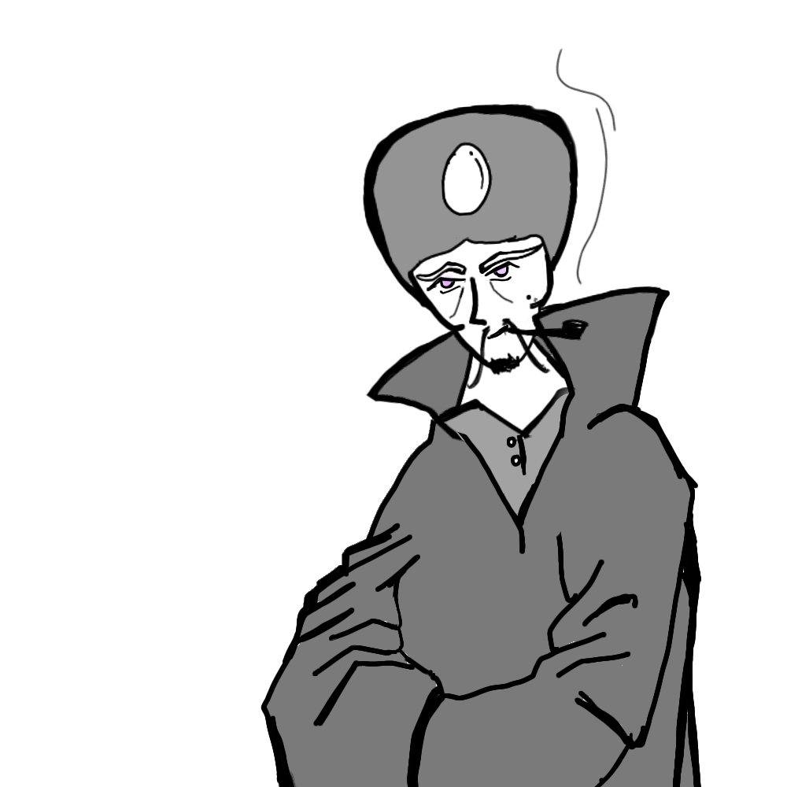

As Artemus breathed a deep sigh on Carak’s question, he looked into his eyes. Carak sees pain and agony in Artemus' eyes, as he begins, “Would you believe me if I were to tell you that I’m the Crowned Prince of Malazan?”. As the light in flames illuminated the anger on his face, Artemus continued, “My father, the King of Malazan ruled over this land peacefully. He was loved by the citizens and the nobles of the country alike. Little did we know, his most trusted Vizier, Laseen would be the one to turn against him. With the growing age of my father, he gave more and more power to Laseen, as he tried to gain more and more influence over the Kingdom.”. Carak was nodding, as the Prince continued, “One day, during the darkness of night, as dark as his heart, after having raised an army just to usurp the Kingdom, Laseen barged open the gates of the Castle. Having been entrusted with the security of the Castle, he made sure that there were no guards in his path. After slicing my father’s throat in half along with his treacherous army, he proceeded to my quarters to kill me.”
As the Prince recalled the deeply buried childhood memories, he told Carak the unique arrangement that had been set up to enter his room. A display - ever so magical that had been set up by the very same sage that would train the Prince years later, would show a pattern containing just 0’s and 1’s. Under the display, one had to enter the minimum length of the pattern that would be obtained after removing all the adjacent 0’s and 1’s from the string. This looked something like:
DISPLAY: 1100
PASSWORD: 0
1100 ￫ 10 ￫ (empty)
DISPLAY: 11101111
PASSWORD: 6
11101111 ￫ 111111 (length 6)
Since the actual pattern on display was ever so long that any man could count, it seemed impossible for anyone to be able to try all the combinations of removing and not-removing adjacent 0’s and 1’s that it would take years for anyone to solve. The Vizier, also tricked by this magical measure, stroked his goatee in disbelief, as various of his soldiers tried to decode this puzzle. Hearing the commotion on the other side of the door, the Royal Guard, Mikhaekl breathed a sigh of relief. He had heard the army marching inside and had used this Emergency Safety Device to stop the Vizier from reaching the infant prince. However, he knew that it was only a matter of time before the Vizier would barge in. He made use of the secret passage that connected the Prince’s room to the ground floor of the palace to escape with the Prince.
On the other side of the door, the Vizier exclaimed to himself, “This is a trap. The order of one’s and zero’s is irrelevant, and so is the 1 and 0 that are taken to make a pair. Any 1 and 0 in the string will be combined. The password is simply the absolute value of (Number of 1’s - Number of 0’s).” It was indeed the case, and as the Vizier began counting the 1s and 0s in the ever so long string, he laughed and entered the PASSWORD 41.
Laseen, with his army marched into the Prince’s quarters, expecting to slay the Prince and completely overtake the Kingdom, he was instead greeted with an empty room, devoid of life. He then noticed a closed door of the secret tunnel, and shouted to all his guards to form a barrier around all entrances, trying to catch the only thing that could stand in his path of becoming the King.
Mikhael knew that he had only one chance to dodge the barrage of the soldiers that stood in his path. As he looked at the various gates in front of him, those that would lead to freedom, he tried to find the entrance which would have the minimum resistance - the least number of soldiers.
The soldiers at each gate in front of him kept increasing and decreasing at a rapid rate - some soldiers fighting the few loyal soldiers left in the castle and reduce the number. In contrast, some more treacherous soldiers kept coming, suspecting they saw something. Mikhael knew that he had a tiny time frame to make an escape. As he saw the loyal soldiers die in front of his very eyes, he decided to use Segment Tree to find the most optimal tunnel to escape from, and to process the incoming and the outgoing soldiers.
The segment tree is represented as an array, with each element being the number of soldiers in a gate. Now, a segment tree can make updations of insertions and deletions to find the final array values in O(logN) complexity.
We compute and store the sum of the elements of the whole array, i.e. the sum of the segment a[0…n−1]. We then split the array into two halves a[0…n/2] and a[n/2+1…n−1] and compute the sum of each halve and store them. Each of these two halves in turn also split in half, their sums are computed and stored. And this process repeats until all segments reach size 1. In other words we start with the segment a[0…n−1], split the current segment in half (if it has not yet become a segment containing a single element), and then calling the same procedure for both halves. For each such segment we store the sum of the numbers on it.
We can say that these segments form a binary tree: the root of this tree is the segment a[0…n−1], and each vertex (except leaf vertices) has exactly two child vertices. This is why the data structure is called "Segment Tree", even though in most implementations the tree is not constructed explicitly.
From this short description of the data structure, we can already conclude that a Segment Tree only requires a linear number of vertices. The first level of the tree contains a single node (the root), the second level will contain two vertices, in the third it will contain four vertices, until the number of vertices reaches n. Thus the number of vertices in the worst case can be estimated by the sum 1+2+4+⋯+2⌈log2n⌉=2⌈log2n⌉+1<4n.
The height of the Segment Tree is O(logn), because when going down from the root to the leaves the size of the segments decreases approximately by half.
So, he created a segment tree, to store information about the number of soldiers at each gate. At every death or new arrival of soldiers he would update the segment tree.
Finding the opportunity when he realised that all loyal soldiers were massacred, and now the resistance in each gate would only increase, he uses the segment tree algorithm to find the most optimal gateway. Upon discovering that the most optimal path to escape would be from Gate No 5, he quickly rushed to it, the prince in his arms.
Mikhael rushes with his sword in front of him, and the infant prince protected by a shield, killing everyone that stood in his path. Many arrows and swords landed blows at him, shot by the treacherous soldiers, who despite once being loyal to the Royal Blood that was flowing in the Prince’s veins, now ran to murder the same Royal Blood. As Mikhael ran through the extensive lands, dodging whatever arrows he could, he saw a faint ray of escape - the untamed river Chankula. Running as fast as he could, he plunged into the ferocious waters and held the weeping child high so that he could breathe. The rumbling water hit against his deep wounds, and as he shouted in agony, which went unheard, he was happy that the Prince might even be saved. The river had various branches and tributaries, and even the soldiers who rode horses couldn’t follow each branch to eliminate the threat that they wanted to kill. Afraid that the Vizier might kill them, they unanimously decided to tell him that the Prince was killed and dumped in the river, lest they could lose their lives.
Upon hearing about the death of his only remaining enemy, Vizier laughed in victory. Since the only people who had witnessed this treacherous act by the Vizier were now all dead or had alleged their loyalty to him, he decided to fake the truth about the fate of the King to gain his popular support. At the very break of dawn, it was announced throughout the kingdom that the Emperor had an important announcement to make. As the public huddled to listen to what the Emperor whom they held in high regard had to say, they were instead greeted by the bleak faced Vizier, who stood where the King once stood to address the public. With his voice ever so sombre, he said, “It is with great displeasure that I must break this to you, the King is no more. A fire broke out in the castle yesterday night under mysterious circumstances, engulfing the King’s and the Prince’s quarters in flames. Despite the best attempts of the soldiers, they could not be saved. Emperor Arsalan’s death was a tragedy, but to lose Artemus, who had barely begun to live…… For me, it’s a deep, personal loss. So it is with a heavy heart that I assume the throne. Yet, from out of the ashes of this tragedy, we shall rise to greet the dawning of a new era…….” As the Vizier finished his speech, the majority of the crowd broke down in tears upon the death of the King.
It was in this way that the Vizier overtook the throne that he had looked at with lusty eyes for so many years. As he happily occupied the throne, he even used his dark magic, that he had practised for so many years, to influence the nobles and clergy in his favour. With the support of the public for being a tragic figure, the support of the nobles through his trickery, and death of the Prince who was the only one that could endanger his plans, the Vizier was now assured of occupying the throne without any hindrance. Little did he know that in the other part of the Kingdom, the very seed that would challenge him was already sown.
